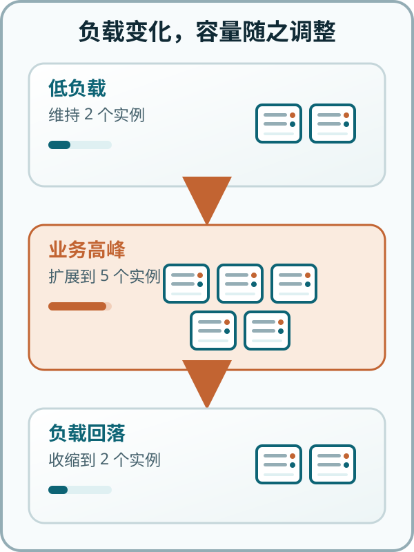

云媒体
媒体库由服务端更新，播放进度可以跨设备接续
按需获得计算能力
 VER. 2607
Built with impress.js
VER. 2607
Built with impress.js
完成本节后，你应该能够
云服务的共同点
媒体库由服务端更新，播放进度可以跨设备接续
在浏览器中直接编辑，多人可以同时修改同一份文档
文件按需上传、下载分享，套餐不同，容量也不同
手机设置、照片、App 内容在多台设备间保持一致
计算资源如何组织，计算资源如何被业务使用
自建数据中心会有哪些常见问题
冗余设备闲置
临时容量不足
自己建设与维护
故障与升级成本
物理设备是手段，计算能力才是目的
购买机器：自行采购计算设备
↓
建设系统：自行配置机房与软件环境
↓
预留峰值：按偶发最高负载准备容量
按需申请：按当前需求获取计算资源
↓
使用服务：租用资源承载业务负载
↓
释放资源：需求下降后缩减容量
云计算改变了计算能力的供给和使用方式
不同机构都把云计算看成可扩展的服务交付模式
通过网络按需访问共享资源池，资源能够快速获取和释放
借助互联网，把可扩展、可弹性的 IT 能力作为服务交付
通过网络访问可共享的物理或虚拟资源池，并按需自助配置和管理
来源：NIST SP 800-145 · Gartner · ITU-T Y.3500
网络访问、共享资源池、弹性和按需服务，是反复出现的关键词
判断某项服务是否为云计算的判断标准
用户自主申请计算资源
多种终端通过不同网络访问服务
物理和虚拟资源的动态分配与回收
资源可以随负载迅速扩展和收缩
使用量能够被监测、控制和报告
| 场景 | 已知信息 | 还缺什么证据 |
|---|---|---|
| 本地软件 | 离线使用，数据保存在本机 | 网络访问、资源池、弹性、计量 |
| 普通网站 | 可以通过浏览器访问 | 资源池、弹性、计量 |
| 远程桌面 | 可以通过网络连接其它电脑 | 按需自助、动态回收 |
| 云主机 | 可以自主申请并按使用量结算 | 容量是否可以快速伸缩 |
联网是必要的，但联网服务不一定都是云计算
把分散计算设备整理成可以统一调度、回收的计算资源
连接计算、存储和网络资源
隐藏具体设备与位置细节
按业务需求分配合适的资源
释放后，可重新用于其他任务
描述计算资源与负载之间持续匹配的过程
观察请求量和资源利用率
业务增长时增加可用计算能力
高峰期间保持服务正常运行
负载下降后释放多余计算资源

平台拥有的计算能力
例如：20 万台服务器、30 个数据中心
节点故障后的应对
例如：故障自动切换、数据保留多副本
资源按负载自动增减
例如：大促自动扩容、低流量自动缩容
规模、可靠性和弹性彼此相关，但又彼此不同
关注服务对象、资源控制和管理边界
面向开放用户，由服务商运营共享资源
例如：阿里云、腾讯云、华为云、Azure、Amazon
服务单一组织，控制更强且管理责任更重
例如：银行自建云、校园专用云、政府专用云
组合不同环境，按敏感度与弹性需求分隔
例如：核心账务留在私有云，活动前端部署在公有云
NIST 还定义了社区云，指用于具有共同安全、政策或任务要求的组织群体
| 场景 | 优先考虑 | 可能选择 |
|---|---|---|
| 医院电子病历与影像系统 | 合规、控制、数据边界 | 私有云或混合云 |
| 学校教务与身份认证系统 | 组织专用、稳定运维 | 私有云 |
| 《王者荣耀》新赛季开服 | 突发流量、快速扩展、开放访问 | 公有云 |
| 银行核心账务、手机营销 | 核心数据隔离、活动流量弹性 | 混合云 |
选择部署模型时，重点考虑控制边界
从分类标准和服务本质两个层面判断
私有云是四种部署模型之一，重点是资源由单一组织专用
如果没有规模化共享和服务化供给，“私有云”可能只是在延续传统 IT 观念
形式上的分类和服务本质可能不是一回事
关注交付对象、管理责任的界线
用户获得计算、存储和网络，用户自行管理操作系统与应用
类比：租用带烤箱厨房，自己准备材料、和面、配料并烘烤
用户获得开发与运行环境，用户自行管理应用和数据
类比：厨房、烤箱和饼底已经备好，自己选择配料并完成披萨
用户直接使用完整软件，用户自行管理业务配置与内容
类比：直接点一份外卖披萨，只需选择口味和数量
服务层次越高，用户直接管理的技术栈越少
| 服务 | 基础设施 | 操作系统与运行环境 | 应用与数据 |
|---|---|---|---|
| IaaS 基础设施即服务 | 服务商 | 用户 | 用户 |
| PaaS 平台即服务 | 服务商 | 服务商 | 用户 |
| SaaS 软件即服务 | 服务商 | 服务商 | 服务商为主 |
选择服务模型，和业务自由度有关，也和责任边界有关
部署模型：“资源为谁服务”，服务模型：“用户获得哪些能力”
部署模型（公/私）×服务模型（S/P/IaaS）= 控制边界 × 交付层次
公共云服务商提供的基础设施资源
组织内部向成员提供完整业务软件
公有云不等于 SaaS，私有云也不等于 IaaS
驱动机构开锁
传送请求、状态、控制结果
扫码、定位、锁控、状态采集
账户、计费、跨设备数据、运营分析
不同位置在时延、规模、带宽和自治能力之间做出不同取舍
感知与执行
例如：传感器采集设备温度和振动，执行器完成急停
实时处理
例如：现场网关判断设备过热并立即联动停机
全局服务
例如：汇总多条产线数据，分析故障趋势并更新模型
按时延、数据范围和现场自治要求，实现协同分工
| 任务 | 首选位置 | 主要原因 |
|---|---|---|
| 执行开锁 | 终端 | 直接作用于物理设备 |
| 异常状态初筛 | 终端或边缘 | 低时延、减少无效传输 |
| 用户账户与计费 | 云端 | 跨设备一致性、集中服务 |
| 全城车辆调度 | 云端 | 需要全局数据、规模化计算 |
物联网的基本要求之一，是把计算任务放在最合适的计算节点
判断云计算和云物联系统时，先找问题维度，再找支持证据
{kind=link}